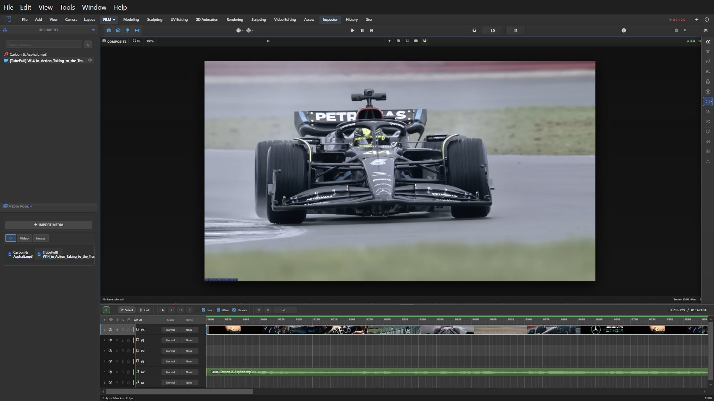

Video Editing Workflow
The SM Engine is not just a 3D application; it includes a fully integrated Non-Linear Editor (NLE) powered by VideoEditingManager.js. This environment allows you to composite rendered 3D scenes with external video assets, handle multitrack audio, and master your final sequence without leaving the engine.
Workspace Sections

The layout is routed via VideoWorkspaceRouter.js, segmenting the editing process into specialized panel configurations.
- Preview Viewport: The main stage. Features a Blender-style dark checkerboard background for transparency visualization, safe margins, and navigation overlays.
- Timeline/Sequencer: The horizontal multi-track view where clips are assembled chronologically.
- Effects Panel: Located typically in the right dock, granting access to the effects library and parameter controls.
- Inspector: Context-sensitive panel revealing properties of the selected clip, including transform (position, scale), opacity, and blend modes (Add, Multiply, Screen, Overlay, etc.).
- Media Browser: File management system for importing and organizing project assets.
- Color Scope: Advanced video analysis tools including Waveform, Vectorscope, Histogram, and RGB Parade graphs.
Clip & Track Architecture
A timeline sequence is built vertically through Tracks, and horizontally through Clips.
Supported Clip Types
| Type | Description | Supported Formats |
|---|---|---|
| Video Clips | Standard moving image files. Support hardware decoding where applicable. | MP4, MOV, AVI, WebM, MKV |
| Audio Clips | Sound files forming the acoustic landscape. | WAV, MP3, AAC, FLAC, OGG |
| Image Clips | Static graphics. Duration can be stretched infinitely. | PNG, JPEG, TIFF, EXR, WebP |
| Image Sequences | A folder of sequentially numbered frames treated as a single continuous video clip. | e.g., frame_0001.png - frame_1000.png |
| Title Clips | Procedurally generated text using the engine's font rendering system. | Internal Generator |
| Color Bars | Industry standard SMPTE color bars for calibration. | Internal Generator |
| Adjustment Layers | Invisible clips that apply their Effects Stack to all underlying clips in the timeline hierarchy. | Internal Generator |
| 3D Scene Clip | A live link to a 3D scene within the current engine project, rendered dynamically as a video source layer. | SM Engine Scene Data |
Track Types
- Video Track: The base compositing layer for visual elements. Clips on higher tracks occlude lower tracks based on opacity and blend modes.
- Audio Track: Dedicated channels for sound. Features waveform rendering, volume envelopes (rubber banding), and global Mute/Solo toggles.
- Effect Track: Global processing layers affecting the final composite output.
- Overlay Track: UI or informational overlays injected post-render.
Timeline & Editing Mechanics
The timeline offers professional editing paradigms designed for speed and precision.
- Playhead: Click or drag the ruler to scrub through time. Scrubbing audio provides real-time pitch-shifted feedback.
- In/Out Points: Press I and O to define the active work area, useful for looping playback or restricting export ranges.
- Zoom: Use the scroll wheel or pinch gestures to seamlessly zoom the time scale in and out.
- Track Height: Drag the track header boundaries to expand or collapse track vertical height, revealing more or less waveform/thumbnail detail.
- Snap: A magnetic toggle that forces clips to perfectly align their edges to other clips, the playhead, or markers.
- Markers: Press M to drop temporal markers for notation, sync points, or chapter indexing.
- Multi-selection: Shift+click to select multiple clips sequentially, or drag a marquee box for bulk operations.
- Ripple Edit: Hold Alt while trimming a clip edge to push or pull all subsequent clips, preventing gaps.
- Slip Trim: Adjust the starting/ending source frames of a clip without changing its duration or position on the timeline.
Audio Mixing System
Audio is handled with sub-frame accuracy. Features include:
- Per-track volume faders supporting 0% to 200% gain scaling.
- Per-clip audio gain normalization.
- Volume keyframes for drawing custom fade-ins, fade-outs, and ducking profiles directly over the waveform.
- Stereo panning controls (-100 Left to +100 Right).
- Automated Audio Sync: Select a high-quality audio clip and a camera video clip, right click, and choose "Sync via Waveform" to automatically align them based on acoustic profiling.
Project Management & State
The VideoProjectState.js module continuously monitors the integrity of the editing session.
- Auto-save: Configurable background snapshotting prevents data loss during complex composite operations.
- Media Cache: Dynamically generated preview files are managed to keep timeline playback smooth, even with high-resolution source media.
- Proxy Workflows: Automatically generates lightweight proxy media for 4K/8K assets, allowing fluid editing on lower-end hardware.
History & Undo (VideoHistoryManager.js)
A robust undo/redo stack tracks every cut, trim, and parameter change. The History Panel displays a readable log of actions. Advanced features include branching history (preventing lost undone states when making new changes) and user-defined Checkpoint markers for safe experimentation.
Essential Keyboard Shortcuts
| Key | Action |
|---|---|
| Spacebar | Play / Pause Timeline |
| J / K / L | Reverse Play / Stop / Forward Play (Press multiple times to speed up) |
| I / O | Set In Point / Set Out Point |
| C | Blade/Cut tool (Splits clip at cursor) |
| V | Selection tool (Default mode) |
| M | Add Marker |
| Delete / Backspace | Delete selected clip(s) |
| Shift + Delete | Ripple Delete (Delete clip and close the gap) |
| Alt + Drag | Duplicate clip |
| Ctrl + Z / Ctrl + Y | Undo / Redo |
| Up / Down Arrows | Jump to Previous/Next edit point |
| Left / Right Arrows | Nudge playhead back/forward one frame |